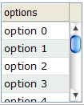

Like list boxes, grids support the live data. With live data, developers could separate the data from the view. In other words, developers needs only to provide the data by implementing the org.zkoss.zul.ListModel interface. Rather than manipulating the grid directly. The benefits are two folds.
It is easier to use different views to show the same set of data.
The grid sends the data to the client only if it is visible. It saves a lot of network traffic if the amount of data is huge.
There are three steps to use the live data.
Prepare the data in the form of ListModel. ZK has a concrete implementation called org.zkoss.zul.SimpleListModel. for representing an array of objects.
Implement the org.zkoss.zul.RowRenderer interface for rendering a row of data into the grid.
This is optional. If not specified, the default renderer is used to render the data into the first column.
You could implement different renderers for represent the same data in different views.
Specify the data in the model property, and, optionally, the renderer in the rowRenderer property.
In the following example, we prepared a list model called strset, assigned it to a grid through the model property. Then, the grid will do the rest.
<window title="Live Grid" border="normal">
<zscript>
String[] data = new String[30];
for(int j=0; j < data.length; ++j) {
data[j] = "option "+j;
}
ListModel strset = new SimpleListModel(data);
</zscript>
<grid width="100px" height="100px" model="${strset}">
<columns>
<column label="options"/>
</columns>
</grid>
</window>
If you allow users to sort a grid provided with live data, you have to implement an interface, org.zkoss.zul.ListModelExt, in addition to org.zkoss.zul.ListModel.
class MyListModel implements ListModel, ListModelExt {
public void sort(Comparator cmpr, boolean ascending) {
//do the real sorting
//notify the grid (or listbox) that data is changed by use of ListDataEvent
}
}
When a user requests the grid to sort, the grid will invoke the sort method of ListModelExt to sort the data. In other words, the sorting is done by the list model, rather than the grid.
After sorted, the list model shall notify the grid by invoking the onChange method of the org.zkoss.zul.event.ListDataListener instances that are registered to the grid (by the addListDataListener method). In most cases, all data are usually changed, so the list model usually sends the following event:
new ListDataEvent(this, ListDataEvent.CONTENTS_CHANGED, -1, -1)